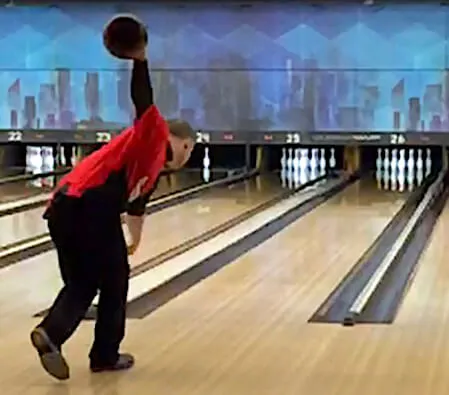
bowlingPublic domain · Air Force Bowling, part of the U.S. Federal Government · source
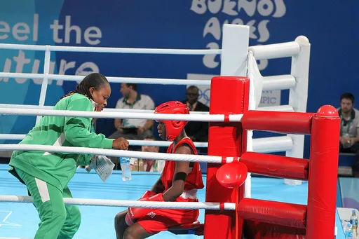
boxingCC BY-SA 3.0 · Marcus Cyron · source
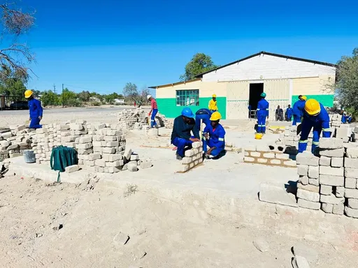
bricklayingCC BY-SA 4.0 · Martin Hipangwa · source
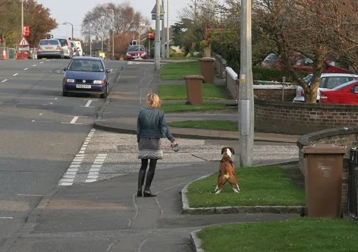
brushing-a-dogCC BY 2.0 · I See Modern Britain · source
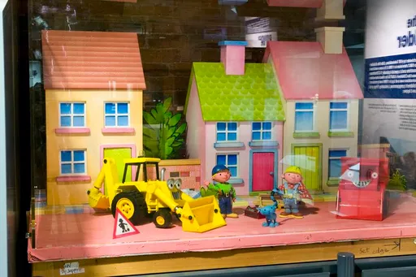
builderCC BY 4.0 · Unknown authorUnknown author · source
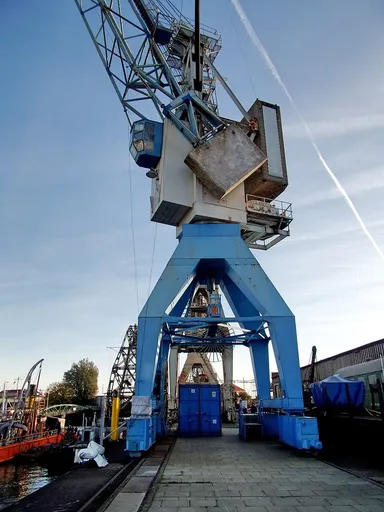
bungee-jumpingCC BY-SA 4.0 · Pauli-Pirat · source
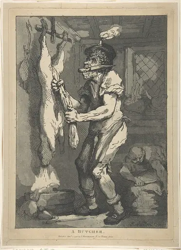
butcherCC0 · Thomas Rowlandson · source
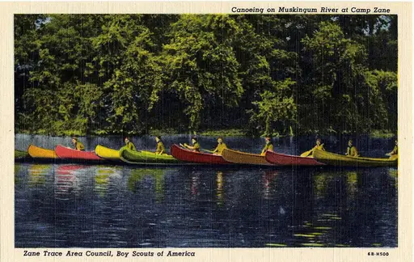
canoeingPublic domain · Unknown authorUnknown author · source
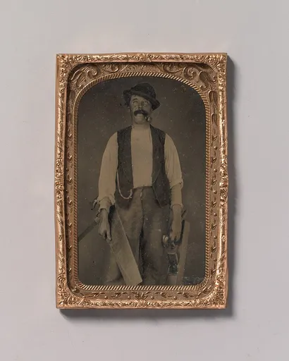
carpenterCC0 · Unknown authorUnknown author · source
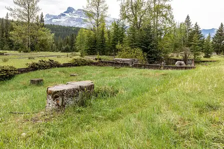
carpentryCC BY-SA 4.0 · Dietmar Rabich · source
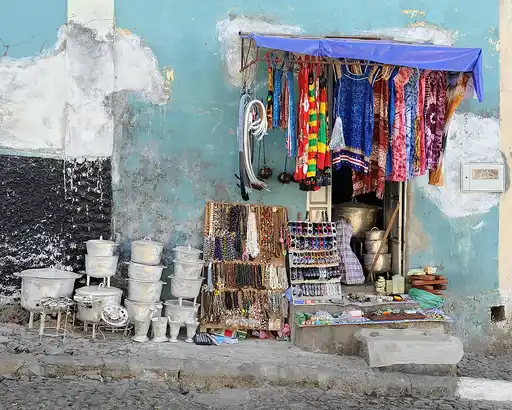
carrying-groceriesCC BY-SA 3.0 · Cayambe · source
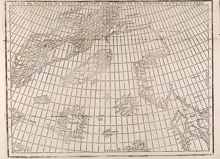
cartographerPublic domain · Zeno · source
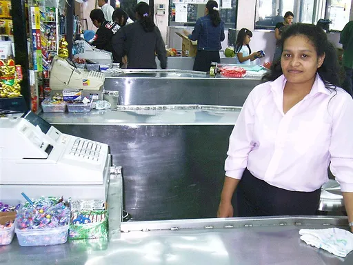
cashierCC BY 2.0 · photo taken by flickr user Young in Panama · source

chefCC0 · Suyash Jagtap official · source
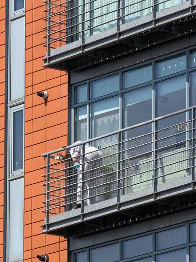
cleaning-windowsCC BY-SA 4.0 · Acabashi · source
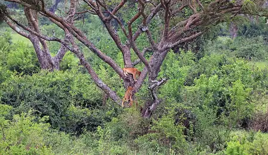
climbingCC BY-SA 4.0 · Charles J. Sharp · source
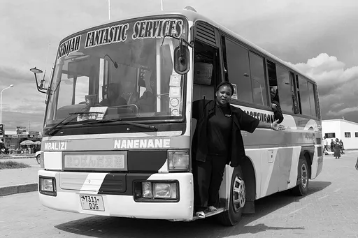
conductorCC BY-SA 4.0 · KelvinJM · source
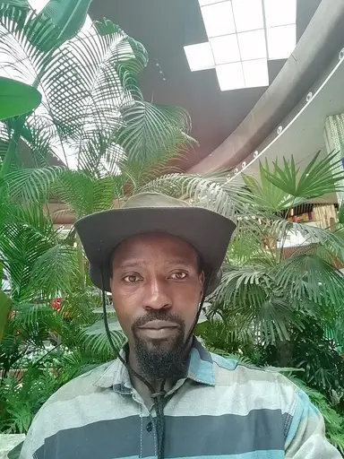
cowboyCC BY 4.0 · BANET ORISHABA · source
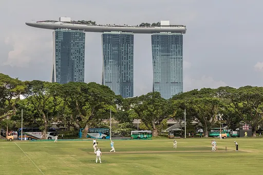
cricketCC BY-SA 4.0 · Basile Morin · source
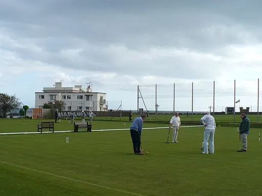
croquetCC BY-SA 2.0 · Robin Drayton · source